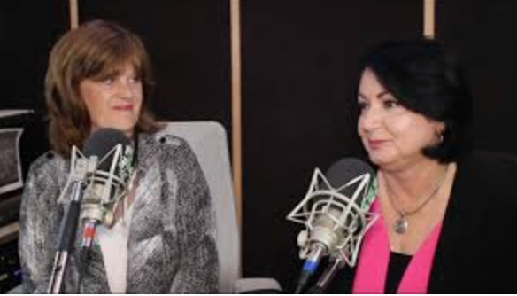

Cenário F: Como lidar com o envelhecimento



Beth Carter: Boa noite a todos. Aqui é Beth Carter, para a rádio BBC. A Open University anunciou ontem que registrou meio milhão de participantes no que afirma ser atualmente o maior curso on-line do mundo. O MOOC da OU aborda um tema com o qual muitos de vocês estarão familiarizados — o envelhecimento, bem como os inúmeros desafios e oportunidades que lhe estão associados.
No estúdio comigo está Jane Dyson, coordenadora do curso. Jane: com 55 anos e vinda da área dos serviços sociais, você parece ser a pessoa menos provável para dirigir um programa tão massivo e baseado em tecnologia. Como isso aconteceu?
Jane Dyson: (risos). Bem, a culpa é toda minha! Sou ex-aluna da OU há muitos anos, e eles têm um fórum on-line de ex-alunos onde perguntam aos antigos estudantes quais as questões mais prementes que veem no mundo e o que a OU poderia fazer para abordar alguns desses problemas. Faço muito trabalho aconselhando pessoas idosas, as suas famílias e, hoje em dia, até empregadores sobre os diferentes tipos de questões que surgem com o envelhecimento.
A OU tem muitas disciplinas e materiais on-line que tratam de muitas destas questões, mas é necessário matricular-se em uma graduação ou diploma, ou pode-se obter os materiais on-line, mas sem qualquer tipo de suporte. Além disso, existem demasiadas questões diferentes para que a OU as cubra nas suas disciplinas formais. Por isso, sugeri que fizessem um MOOC onde todas as pessoas envolvidas — profissionais de saúde, assistentes sociais, prestadores de cuidados, familiares e, o mais importante de tudo, os próprios idosos — pudessem falar sobre as suas dificuldades e desafios, e quais os serviços disponíveis, o que as pessoas podem fazer por si próprias e assim por diante.
Beth Carter: E o que aconteceu depois?
Jane Dyson: A OU pediu-me para ir ao escritório regional local e reuni-me com várias pessoas da instituição e, após essa reunião, perguntaram-me se estaria disposta a coordenar o curso.
Beth Carter: Fale-me mais sobre os MOOCs. Lembro-me de que eram um grande acontecimento há cerca de 10 anos, depois acalmaram e não ouvimos falar muito deles desde então. O que tornou este MOOC tão popular?
Jane Dyson: O problema dos primeiros MOOCs era que os participantes simplesmente se perdiam neles. Muitos dos MOOCs consistiam apenas em palestras expositivas e depois cabia aos participantes ajudarem-se mutuamente. Não havia qualquer organização.
O que a OU fez foi pedir a quem se inscrevia no MOOC "Envelhecimento" que preenchesse um questionário on-line muito simples que solicitava apenas alguns detalhes, tais como onde residiam, se eram profissionais da área do envelhecimento, ou familiares, ou os próprios idosos, e depois utilizou esses dados para distribuir automaticamente os participantes em grupos, de modo a existir uma mistura de perfis em cada grupo.
Beth Carter: Por que razão isso era importante?
Jane Dyson: Bem, na OU, o Instituto de Tecnologia Educacional tinha feito pesquisas sobre os primeiros MOOCs e tinha identificado este problema de como fazer os grupos funcionarem em turmas on-line de grande dimensão. Trabalharam com outro grupo de pesquisa da OU chamado KMI, que desenvolveu o software que estamos utilizando, o qual distribui os participantes em grupos de modo a existir conhecimento e suporte suficientes em cada grupo para ajudar com as questões levantadas nas discussões do grupo.
Beth Carter: E como é que isso funciona?
Jane Dyson: Você não acreditaria na variedade de questões ou problemas que surgem. Por exemplo, temos familiares desesperados porque o pai ou a mãe sofre de demência, mas não sabem o que fazer para os ajudar. Temos idosos que sentem que a família os tenta forçar a sair de casa, enquanto consideram ser perfeitamente capazes de cuidar de si próprios. Temos assistentes sociais que temem ser demitidos ou mesmo processados porque não conseguem dar conta do seu volume de casos. E temos alguns participantes que são apenas idosos e solitários e querem alguém com quem conversar.
Quando colocamos todos estes participantes em um fórum de discussão on-line, os resultados são fantásticos. O que é realmente fundamental é obter a mistura certa de pessoas no mesmo grupo, com conhecimento suficiente para prestar ajuda, e ter alguém nesse grupo que saiba moderar as discussões. Dispomos de uma lista enorme de serviços disponíveis não só na Grã-Bretanha, mas em muitos dos outros países de onde provêm os nossos estudantes. O curso constitui, pois, uma modalidade de serviço de suporte e autoajuda no âmbito de uma comunidade de prática mais ampla.
Beth Carter: Falemos sobre os estudantes internacionais. Pelo que entendi, quase metade dos participantes provém de fora do Reino Unido.
Jane Dyson: Exato. Os problemas de um envelhecimento demográfico não são apenas britânicos. A OU faz parte de uma rede muito forte de universidades abertas em todo o mundo. Quando estávamos debatendo o lançamento desta disciplina, a OU contactou várias outras universidades abertas e perguntou-lhes se estavam interessadas em participar. Assim, temos participantes dos Países Baixos, da Alemanha, da França, de Espanha, do Japão, do Canadá, dos EUA e de muitos outros países, que participam na versão em língua inglesa.
Em Espanha, contudo, dispomos de um site "espelho" com materiais em espanhol, basco e catalão, e os fóruns de discussão são geridos pela Universidade Aberta da Catalunha. Isso atrai não só participantes de Espanha, mas também da América Latina. Estamos prestes a desenvolver um acordo semelhante com a Universidade Aberta da China, que prevemos que trará mais meio milhão de participantes. O que é fantástico é que, como temos tantos participantes, existem sempre participantes bilíngues em número suficiente para transferir conteúdos de um fórum de discussão de uma língua para outra.
Beth Carter: E o que se segue?
Jane Dyson: Uma das grandes questões que continua a surgir no curso de Envelhecimento é a questão da saúde mental. Esta, naturalmente, não diz respeito apenas às pessoas idosas. O curso de Envelhecimento já deu origem a petições ao parlamento sobre melhores serviços para pessoas idosas isoladas, e creio que assistiremos a desenvolvimentos positivos nesta frente nos próximos dois anos. Assim, penso que a OU está planejando um MOOC semelhante sobre saúde mental, e eu gostaria muito de fazer parte dessa iniciativa.
Beth Carter: Muito obrigada, Jane. Na próxima semana, debateremos o jogo on-line com um conselheiro em dependências.
[Este cenário foi desenvolvido como uma proposta de simulação ("what if?") para a Open University do Reino Unido, como parte do seu planejamento de ensino e aprendizagem em 2014.]